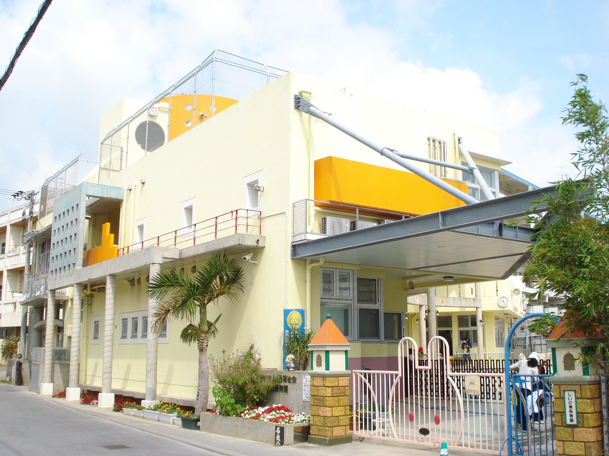

園の理事長・園長先生へ
保育園・こども園・
福祉施設
2001年から2021年まで、沖縄県内の保育園・こども園を14件手がけてきました。新築だけでなく、増築・改修・厨房改修まで。子どもたちの安全と保育のしやすさ、そして運営の続けやすさを軸に設計します。
- 県内14件の実績
- 那覇・宜野湾・浦添・うるま・豊見城の各市で、本園・分園・認定こども園の設計監理を担当してきました。
- 運営を止めない増改築
- 園を開けたまま進める増築・改修の実績があります。保育動線と安全を確保した工程を計画します。
- 補助金・行政手続きに伴走
- 整備補助のスケジュールに合わせた工程計画から、建築確認申請などの手続きまで一貫して対応します。